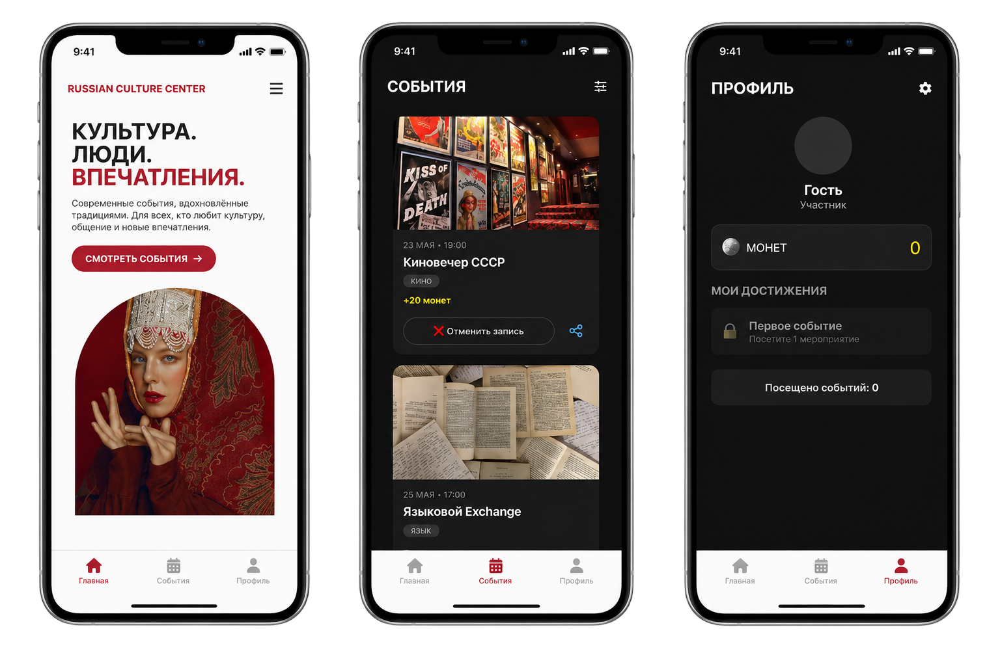

Сервис для анонсирования мероприятий и быстрой регистрации студентов без необходимости скачивать отдельное приложение. Спроектировала интерфейс с нуля и реализовала фронтенд за 30 дней.
Центру российской истории и культуры при факультете креативных индустрий ВШЭ требовалась единая точка входа для анонса мероприятий и сбора регистраций. Раньше информация терялась в чатах, а запись через сторонние формы создавала лишний барьер для студентов.
Цели проекта:
1. Бесшовный онбординг и нативная интеграция
Выбор формата Telegram Mini App позволил отказаться от регистрации и ввода личных данных: приложение подтягивает профиль пользователя автоматически, а интерфейс адаптирован под нативные паттерны навигации Telegram.
2. Сценарий записи в один клик
На карточке мероприятия собрана только критически важная для принятия решения информация: дата, формат (тег категории), визуальный акцент и ценность в баллах. Запись и отмена происходят мгновенно без перезагрузки страницы и перехода на внешние формы, а кнопка «Поделиться» позволяет сразу переслать анонс однокурсникам в чат.
3. Геймификация и удержание
Чтобы мотивировать студентов посещать мероприятия регулярно, а не разово, я встроила систему внутренней валюты и достижений:
4. Визуальный контраст и фокус на контенте
Для промо-экрана выбрана выразительная типографика и контрастная акцентная палитра, отсылающая к культурному коду проекта. При этом основные рабочие экраны («События» и «Профиль») переведены в спокойную темную тему: это снижает визуальный шум, выделяет обложки мероприятий и комфортно воспринимается при просмотре со смартфона в любое время суток.

[ Место для мокапов ]Проект выполнен в формате полного цикла (end-to-end) — от исследования сценариев до готового кода: